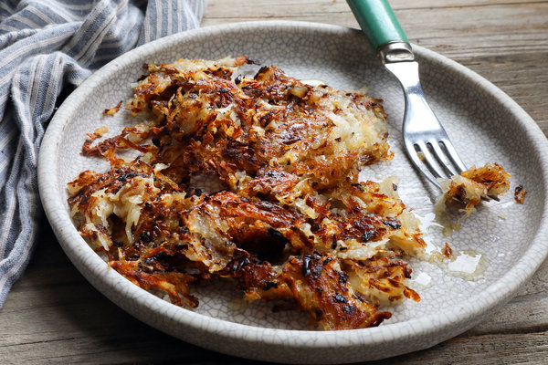

Hashbrowns
Back to Recipes

Hashbrowns for One
This recipe will show you how to make hashbrowns for one. It is a super simple recipe and goes great with some eggs or bacon.
Things you'll need
- Pan
- Tbsp oil
- 2/3 cups of shredded hashbrowns
Steps
- Preheat pan to medium-high.
- Add oil to pan once it is hot.
- Oil will begin to shimmer, add hashbrowns to pan.
- Spread hashbrowns evenly accross the pan
- Cook for about 5 - 10 minutes
- Once hashbrowns are crispy on the bottom flip them.
- Cook for an additional 2 minutes, then plate.
- Enjoy